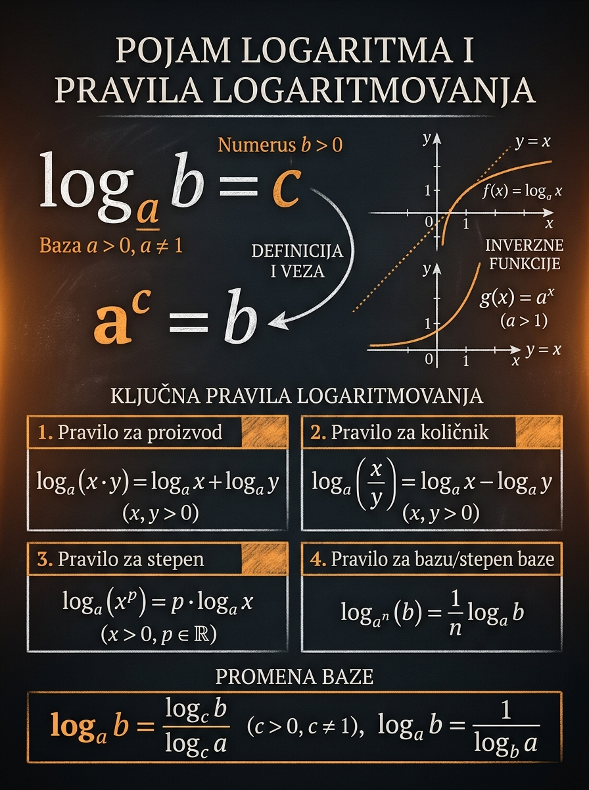

Šta učiš
Kako da prevodiš između eksponencijalnog i logaritamskog jezika bez napamet naučenih koraka
To je ključ da kasnije logaritamske jednačine i funkcije deluju poznato, a ne zastrašujuće.
Logaritam nije nova „čudna” operacija, već drugo lice eksponenciranja. Kada pitaš „na koji stepen treba dići bazu da dobijem zadati broj?”, već si postavio logaritamsko pitanje. Ova lekcija gradi taj smisao, a zatim pokazuje kako pravila logaritmovanja postaju prirodna posledica rada sa eksponentima.
To je ključ da kasnije logaritamske jednačine i funkcije deluju poznato, a ne zastrašujuće.
Mnogo grešaka nastaje baš zato što se pravila prošire i tamo gde ne važe.
Kada na vreme vidiš strukturu izraza, rešenje se skraćuje i postaje pregledno.

Vredi uložiti vreme, jer ova lekcija otvara vrata jednačinama, nejednačinama i grafiku logaritma.
Bez sigurnog rada sa potencijama, pravila logaritmovanja deluju nasumično umesto logično.
Na prijemnom često pobeđuje onaj ko brzo vidi koji zakon logaritmovanja treba primeniti.
Vizuelno pratiš kako se iz eksponenata dobijaju pravila za proizvod, količnik i stepen logaritma.
Čim ne možeš lako da vidiš koji stepen daje zadati broj, prirodno je da uvedeš logaritam. Zato logaritmi nisu sporedna tema, već most između eksponencijalnog mišljenja i kasnijih zadataka iz funkcija, jednačina i nejednačina.
Ako je eksponencijalna funkcija govorila „diži bazu na stepen”, logaritam odgovara na pitanje koji je to stepen.
Najčešće zamke su širenje pravila na zbir, mešanje baze i argumenta i pogrešna promena baze.
Ko sada dobro postavi definiciju i pravila, mnogo lakše kontroliše naredne lekcije.
Kada napišemo \(\log_a b = c\), tvrdimo da je \(c\) onaj eksponent na koji treba podići bazu \(a\) da bi se dobio broj \(b\). Ovo je formalno i najvažnije značenje logaritma.
Leva strana je logaritamski zapis, a desna eksponencijalni. U praksi stalno prelaziš s jednog zapisa na drugi, jer ti jedan ili drugi bude pogodniji za računanje.
Zato što je \(2^3=8\). Traženi eksponent je \(3\).
Svaka dozvoljena baza na nulti stepen daje \(1\), pa je logaritam od \(1\) uvek nula.
Zaista, \(\left(\frac12\right)^{-3}=8\). Ovo lepo pokazuje da logaritam može biti i negativan.
Eksponenciranje i logaritmovanje se poništavaju kada su baza i argument pravilno postavljeni. Ta ideja je toliko važna da je vredi izdvojiti posebno, jer kasnije objašnjava i grafik logaritamske funkcije i mnoga skraćenja u računu.
Ako je \(\log_a x\) upravo eksponent koji daje \(x\), onda vraćanjem baze \(a\) na taj eksponent dobijaš početni broj.
Ovde je važna stvar da je baza ista. Ako menjaš bazu, više nema direktnog poništavanja, već treba uključiti promenu baze ili prepisivanje brojeva.
Zato \(\log_{10} 1000 = 3\), ali i \(\log_2 \frac18 = -3\). U oba slučaja logaritam kaže koji eksponent radi posao, bilo da je pozitivan ili negativan.
Samo pređi na eksponencijalni zapis: \(x=3^4=81\). Upravo ta brzina prevođenja štedi vreme na prijemnom.
Ova pravila nisu proizvoljna. Ona dolaze iz zakona stepena. Ako je \(x=a^u\) i \(y=a^v\), tada je \(xy=a^{u+v}\), pa je logaritam proizvoda upravo zbir logaritama.
Na primer, \(\log_2 8+\log_2 4=\log_2 32\).
Na primer, \(\log_3 54-\log_3 2=\log_3 27\).
Zato \(2\log_3 5=\log_3 25\), a \(3\log_2 5=\log_2 125\).
Ovo je direktna posledica pravila za stepen, jer je \(\sqrt[n]{x}=x^{1/n}\).
Promena baze je praktičan alat. Nekad služi da logaritam izračunaš preko kalkulatora, a nekad da zadatak svedeš na bazu koja ti je prirodnija, kao što su \(2\), \(3\), \(10\) ili \(e\).
Posebno su praktični izbori \(b=10\) i \(b=e\), jer ih kalkulator obično već podržava kroz tastere \(\log\) i \(\ln\).
Ako je zadatak \(\log_4 8\), možeš odmah preći na bazu \(2\):
Pišeš \(\log_2 7=\frac{\log 7}{\log 2}\). Ne mora svaki logaritam imati „lep” stepen.
Prelaz na bazu \(3\) daje \(\frac{\log_3 27}{\log_3 9}=\frac32\).
Ispravno je \(\frac{\log_b x}{\log_b a}\), a ne obrnuto. Zamenom brojilaca i imenilaca dobijaš pogrešan rezultat.
U laboratoriji biraš bazu \(a\), eksponente \(u\) i \(v\), kao i stepen \(n\). Zatim pratiš brojeve \(x=a^u\) i \(y=a^v\), pa vidiš kako logaritam proizvoda daje \(u+v\), logaritam količnika \(u-v\), a logaritam stepena \(n\cdot u\).
Ova interakcija namerno koristi brojeve koji su stepeni baze, da pravila postanu pregledna i tačna.
Svaki primer ima jasan cilj: ili da učvrsti smisao definicije, ili da pokaže tačnu upotrebu pravila. Gledaj ne samo rezultat, nego i razlog zašto je izabran baš taj korak.
Pitaj se: na koji stepen treba podići \(2\) da bi se dobilo \(32\)?
Pošto je \(2^5=32\), traženi eksponent je \(5\).
\[ \log_2 32 = 5 \]
Tražiš eksponent \(c\) takav da \(\left(\frac12\right)^c=8\).
Pošto je \(\left(\frac12\right)^{-3}=8\), sledi:
\[ \log_{\frac12} 8=-3 \]
Prevedi logaritamski zapis u eksponencijalni:
\[ \log_3 x = 4 \iff 3^4=x \]
Izračunaj \(3^4\):
\[ x=81 \]
Prvo spoji zbir u proizvod:
\[ \log_2 8 + \log_2 4 = \log_2(8\cdot 4)=\log_2 32 \]
Zatim primeni pravilo za količnik:
\[ \log_2 32 - \log_2 2 = \log_2\left(\frac{32}{2}\right)=\log_2 16 \]
Na kraju prepoznaj vrednost:
\[ \log_2 16 = 4 \]
Eksponent \(2\) prebaci u argument:
\[ 2\log_3 5 = \log_3 25 \]
Sada iskoristi pravilo za količnik:
\[ \log_3 25 - \log_3 15 = \log_3\left(\frac{25}{15}\right)=\log_3\left(\frac53\right) \]
Promeni bazu na \(2\), jer su i \(4\) i \(8\) stepeni dvojke:
\[ \log_4 8 = \frac{\log_2 8}{\log_2 4} \]
Izračunaj oba logaritma posebno:
\[ \log_2 8 = 3,\qquad \log_2 4 = 2 \]
Zato je:
\[ \log_4 8 = \frac32 \]
Ovde su skupljene formule koje treba da budu potpuno sigurne. Ako neku od njih moraš da „rekonstruišeš” pod pritiskom, gubiš vreme koje na prijemnom nemaš.
Većina poena se ovde ne gubi na teškim idejama, nego na prebrzom pisanju pogrešnog pravila. Zato je korisno da ove zamke vidiš unapred.
Pogrešno: \(\log_a(x+y)=\log_a x+\log_a y\). Pravila važe za proizvod, količnik i stepen, ne za zbir.
Podsetnik: baza mora biti pozitivna i različita od \(1\), a argument pozitivan.
Primer: \(\log_2 8\) i \(\log_8 2\) nisu isti broj. U prvom slučaju rezultat je \(3\), u drugom \(\frac13\).
Ispravno: \(\log_a x=\frac{\log x}{\log a}\). Ako obrneš razlomak, dobijaš pogrešan rezultat.
Razlika je velika: prvo je \(2\log_a x\), a drugo kvadrat već izračunatog logaritma.
Primer: \(\log_4 8=\frac32\). Logaritam je broj, ali ne mora biti ceo.
Na prijemnom se logaritmi retko pojavljuju sami. Obično traže da brzo odlučiš da li broj možeš odmah prepoznati kao stepen baze, da li treba primeniti neko pravilo ili je vreme za promenu baze.
Probaj najpre bez pomoći. Ako negde zastaneš, pokušaj makar da odrediš koji princip stoji iza zadatka: definicija, pravilo logaritmovanja ili promena baze.
Ako ovu jednu misao zaista usvojiš, većina pravila prestaje da bude lista za pamćenje. Počinješ da ih vidiš kao prirodnu posledicu zakona stepena.
Ovo su glavne tačke koje treba da ostanu čvrste i kada zadatak izgleda gušće nego što jeste.
Uvek se vrati na pitanje: na koji stepen treba podići bazu \(a\) da se dobije \(b\)?
Baza mora biti pozitivna i različita od \(1\), a argument pozitivan.
Množenje prelazi u sabiranje, deljenje u oduzimanje, a stepen argumenta ispred logaritma.
Formula za promenu baze je standardni alat i za tačne transformacije i za rad s kalkulatorom.